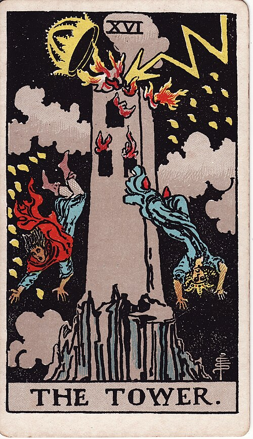

| Arcana | Major · XVI |
| Suit | — |
| Element | Fire |
| Attribution | Mars |
The Tower
In shortSomething built on a lie is about to collapse.
Upright
Something built on a false foundation comes down, fast. This is the sudden discovery that makes a whole arrangement impossible to keep up — the phone call, the thing you find out, the moment the story stops working. It is unpleasant and it is clarifying, and what it destroys was going to fall eventually anyway. Nobody enjoys this card, but it removes in an afternoon what avoiding it would have preserved for years.
Reversed
The collapse is being delayed, resisted, or happening in slow motion. This can be a crisis you narrowly avoided, a structure you are frantically propping up, or dread about a disaster that has not come and may never. It is also the aftermath: standing in the rubble, still shaking, starting to notice what is actually still standing.
The turn
Do not rebuild the same tower. Ask what the collapse revealed before you start clearing.
Reading with your own deck?
Sage records the cards you actually pull, writes the reading, keeps every one, and shows you what keeps returning across them. Free, private, no account.